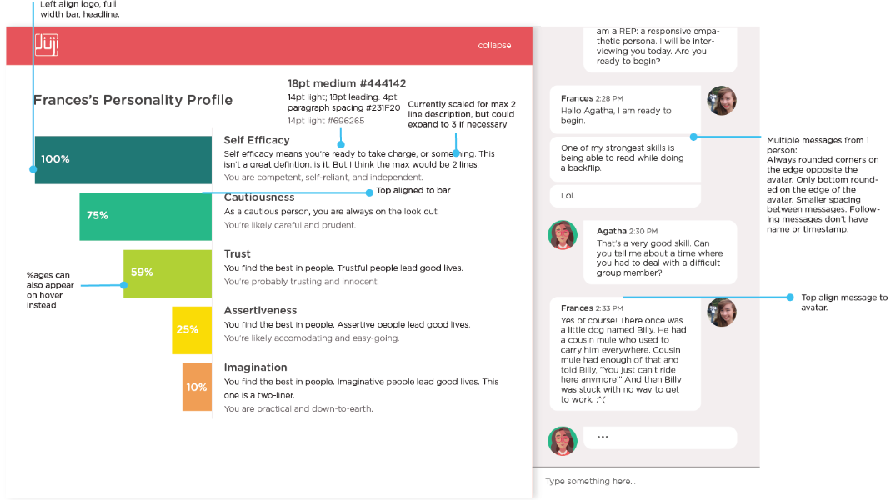
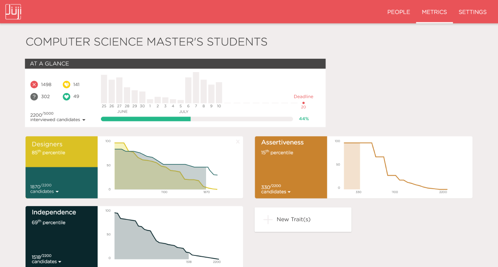

During the summer of 2016, I interned at a small start-up called Juji in the South Bay. There, I designed and developed a web-based interface for recruiters/HR to sort candidates by automatically inferred personality traits, as well as a chat interface to conduct virtual interviews and where candidates could see their inferred personalities. Using this system, I helped run a research study testing the effects of the personalities of both virtual agents and interviewees on trust. You can see a video summary of the system above, which accompanied our research paper, Whom Are You Willing to Confide in or Listen to: A Cheerful or Serious Chatbot?. The paper pre-print is here; you can read the abstract below.

Design specification for a chatbox

Hifi mockup for a data visualization page
Abstract
We present an intelligent virtual interviewer that engages with a user in a text-based conversation and automatically infers the user’s psychological traits, such as personality. Here we investigate how the personality of a virtual interviewer influences a user’s behavior from two perspectives: user’s willingness to confide in, and listen to, a virtual interviewer. We have built two virtual interviewers with two distinct personalities and deployed them in a real-world recruiting event. We present findings from completed interviews with 316 actual job applicants. Notably, users are more willing to confide in and listen to a virtual interviewer with a serious, assertive personality. Moreover, users’ personality traits, inferred from their chat text, influence their perception of a virtual interviewer, and their willingness to confide in and listen to a virtual interviewer. Finally, we discuss the implications of our work on building hyper-personalized, intelligent agents based on inferred user traits.
Several different agent avatars